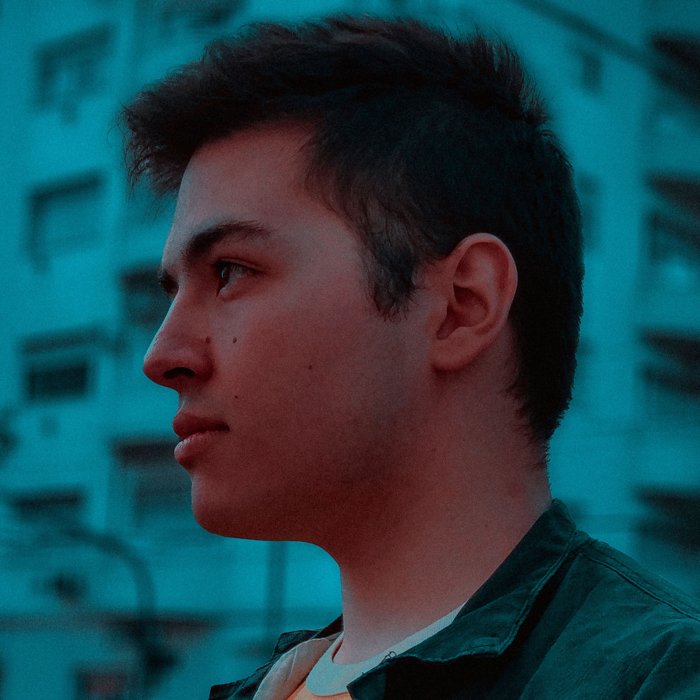
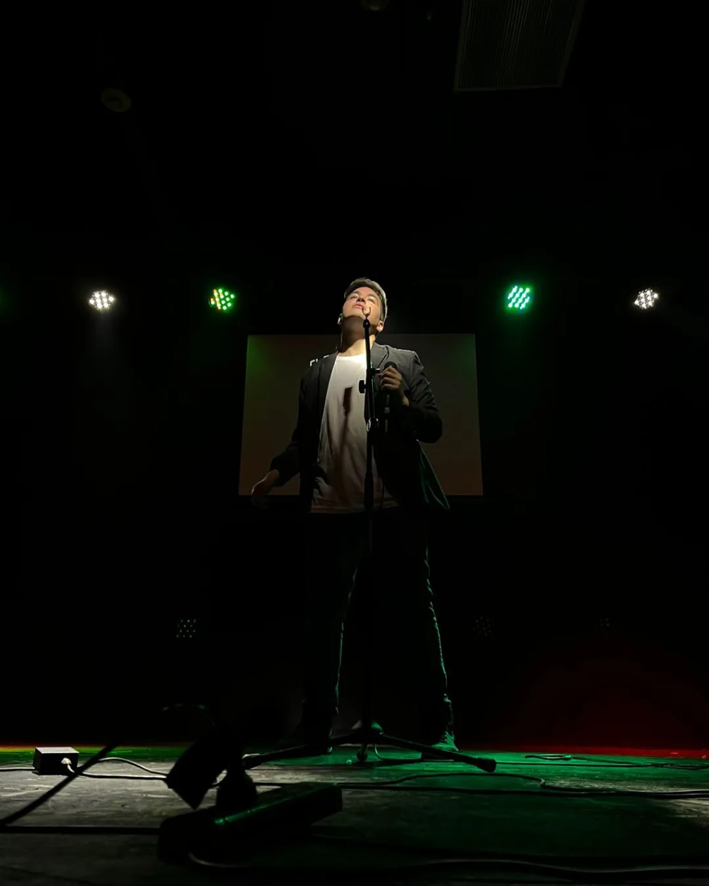
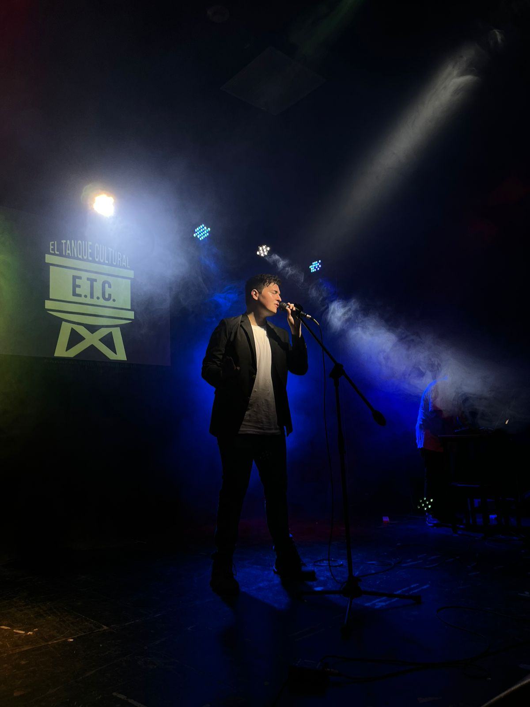
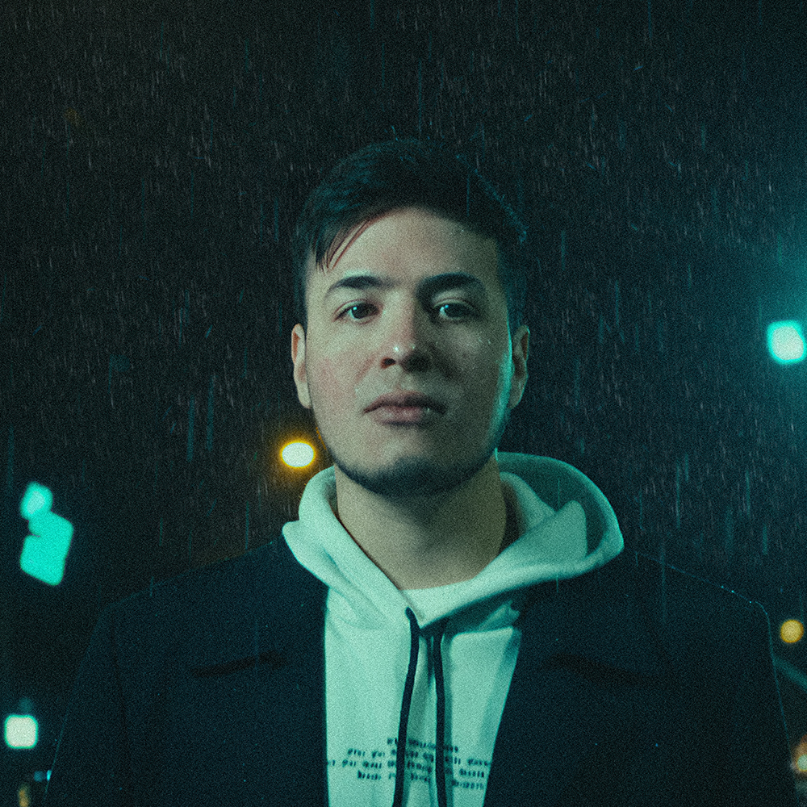

Sobre el proyecto
Un recorrido entre lo íntimo y lo inmenso.
Valen Piccoli es cantante, productor y compositor de Buenos Aires. Su universo se mueve entre el pop, dream pop, synth pop y pop urbano.
En sus canciones, las experiencias de la vida y los elementos naturales se convierten en una misma narrativa. Con sensibilidad pop como centro, explora también texturas de reggaetón y funk brasileño.
Disponible para shows, prensa y colaboraciones.

5Álbumes de estudio
36k+Streams de La Tormenta en Spotify
BABuenos Aires, Argentina
Discografía
Canciones para atravesar mundos.
Cinco álbumes de estudio y una edición compilatoria que reúne canciones publicadas entre 2019 y 2021.
Nostálgico
La Tormenta
+36k en SpotifyAunque En Mi Mente Aún No Estés
ONÍRICO
Edición compilatoria
Canciones seleccionadas

En vivo
Una experiencia para escuchar y mirar.
- La Plata
- INK · Quilmes
- Libario Multiespacio
- El Tanque Cultural
- Teatro Universidad · UNLaM
- El Panda Rojo
Videos oficiales
La canción también vive en la imagen.

Contacto
Shows, prensa y colaboraciones.
Para contrataciones, entrevistas, propuestas de prensa o proyectos creativos, escribí al contacto de management.
valenpiccolimanagment@gmail.com